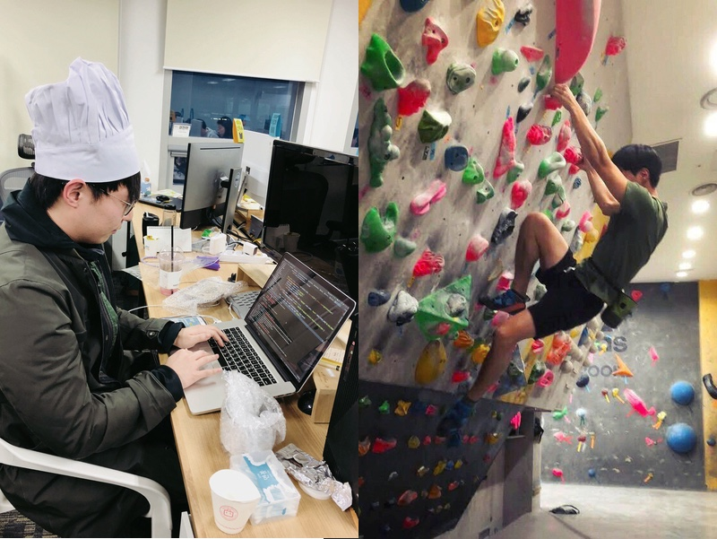

About Pair Interview
알지피 기술 블로그에서는 의미있는 인터뷰 테마를 선정하고, 테마에 어울리는 엔지니어 두 분을 Pair로 초대하여 흥미로운 이야기를 싣고 있습니다.
첫 번째 테마: 배움

(좌) 김동욱 / 요기요 서버 개발 엔지니어: 마들렌 잘 굽는 개발자, 그의 베이킹을 응원하며 제빵모자를 선물로 드림
(우) 임수용 / 요기요 iOS 앱 개발 엔지니어: 클라이밍 4개월차, 선물로 드린 초크백 인증. 프로의 느낌!
안녕하세요, 기술 블로그 에디터를 맡고 있는 김나리 (a.k.a Scrum Master)입니다. 첫 인터뷰 대상자로 초대소환되신 요기요 개발자 동욱님&수용님과 함께 두 분의 ‘배움’에 대한 이야기를 들어볼까 합니다. 두 분을 Pair로 초대한 결정적인 이유가 ‘고기’에 대한 남다른 애정과 배움을 즐길 줄 아는 모습이 비슷하기 때문인데요, 배달음식 앱 개발이 주업인 만큼, 먼저 고기 얘기부터 시작해볼까요?
동욱: 안녕하세요, 요기요 서버 개발을 담당하고 있는 김동욱입니다. 팀에서 솔직함과 고기마스터를 맡고 있습니다. (*편집자 주 - 실제로 그는 음식점 ‘고기마*터’의 귀한 아드님)
수용: 안녕하세요, 요기요 모바일 앱 개발을 담당하고 있는 임수용입니다. 고기는 진리죠. (*편집자 주 - 고기가 주식인 그는 Tech본부 대표 피지컬)
“새롭게 배우는 것을 두려워 하지 않는 편이예요”
나리: 동욱님은 최근 스페인어와 베이킹을, 수용님은 보드에 이어 클라이밍에 도전했다고 들었는데요, 두 분 모두 새로운 것을 시작하고, 배우는데 있어서 두려움이 없으신 편인 것 같아요. 실제 개발을 하는 데 있어서도 그런 성향을 갖고 계신가요? 예를 들어, 파이썬 vs. 스페인어 중 어떤게 더 배우기 쉽나요?
동욱: 당연히 파이썬이죠. 프로그래밍 언어는 검색을 통한 학습이 가능한 반면, 스페인어는 아무래도 실제 ‘말(발화)‘로서 전달되는 언어이기 때문에 다른 것 같아요. 제가 배우는 걸 즐긴다고 봐주셨는데, 정말 배우길 좋아하는 걸까요? 사실 노는 걸 좋아할수도 있죠! 하하
나리: 학습을 놀이로 승화시킨거라고 정리해봅니다^_^
나리: 이번엔, 수용님께 질문 드릴께요, 클라이밍을 시작하는 데 있어서 특별히 어려운 점은 없었나요? 아무래도 스포츠를 즐기시는 만큼, 피지컬이 도움이 되셨을 것 같아요.
수용: 글쎄요… 피지컬 보다는 목표가 주어졌을 때 어떤 경로로 가면 가장 빠르게 목적지에 도달할 수 있을지를 먼저 생각해요. 그렇게 클라이밍을 하다보면, 체력은 저절로 느는 것 같아요. ‘어제의 나’보다 잘 해내는게 중요하죠.
실제 개발을 하는 데 있어서도 이게 개발자의 성향일 수도 있는데, 주어진 문제의 의도를 파악하고 ‘본질에 빠르게 접근’하는 편이예요. 또 다른 사람이 하는 것 보면서 아, 이게 더 효율적인 방식이겠구나라고 분석하죠.동욱: 저도 기능 추가, 버그 픽스를 할 때 새로운 라이브러리, 새로운 것들을 찾아서 하는 경우가 많아서, 확실히 새로운 것들을 하는 것에 대한 진입 장벽이 상대적으로 낮다고 볼 수 있겠네요.
“Pair Programming, 정말 플러스+가 되는 경험이었어요”
나리: 저희 인터뷰가 Pair로 진행되는 만큼, Pair Programming(이하 ‘페어’)에 대한 질문을 드리지 않을 수가 없는데요, 두 분 모두 페어 경험이 있으시죠?
수용: 네, 저는 요기요 모바일 앱 개발을 하면서 처음 페어를 경험해봤는데, 개인적으로는 무조건 플러스라고 생각해요. 훈수 두는 사람이 더 잘 본다는 말이 있는데, 한 걸음 떨어져서 볼 때 더 잘 보이는게 있고, 그게 페어의 장점이라고 생각해요. 서로 의견을 교환하는 과정에서 코드 성향도 자연스럽게 맞춰지고요. 다만, 최근에는 프로젝트가 많아서 페어를 잘 못하고 있어서 아쉽네요.
동욱: 페어가 잘 되려면 서로 대등한 관계여야 된다고 봐요. 저도 페어 경험이 긍정적이었는데, 혼자 코딩할 때와 다르게 코딩하면서 생각하고 있는 것들을 실시간으로 상대에게 공유하고 토론하게 되거든요. 고민하고 있던 것들이 이러한 과정을 통해 다듬어지고, 결과적으로 더 나은 코드를 짜게 되는 것 같아요.
나리: 두 분다 페어에 대해 긍정적인 경험을 공유해주셨는데, 최근에 페어 기회가 없다니 저도 아쉽네요. 자, 이제 서버-클라이언트 개발자로서의 협업에 대해 여쭤볼게요.
“서버-클라이언트 협업?”
나리: 서버-클라이언트 협업이라고 하면, 기획-개발까지는 아니지만 약간은 멀고도 가까운 사이라고 느껴지는데요. 두 분이 같이 프로젝트를 해 보신 경험이 있나요?
동욱: 네, 예전에 API v2 개발 때 수용님과 프로젝트를 같이 했었어요. 그런데 예상보다 서버-클라이언트의 접점이 의외로 없기도 해요.
수용: 어느 정도 동의해요. 클라이언트 개발 입장에서는 API v2라고는 해도, 조금 다른 API가 추가되었다고도 볼 수 있어요. 커뮤니케이션에 있어서도 같은 백그라운드 지식을 갖고 있기 때문에 크게 문제가 없었고요.
나리: 그럼 두 분의 협업은 아름다운 걸로 마무리 합니다!
“어떤 동료와 함께 일하고 싶나요?”
나리: 스스로 배워나가는 것도 중요하지만, 배울 점이 많은 동료가 있다면 더 힘이 날 것 같아요. 그래서 함께 일하는 것의 의미를 돌아보며 인터뷰를 마치려고 합니다. 두 분은 어떤 동료와 함께 일하고 싶나요? 그리고 스스로가 함께 일하고 싶은 동료가 되기 위해 노력하고 있는 점이 있나요?
동욱: 같이 일하고 싶은 동료에 대한 어떤 기준이 있다기 보다는, 이런 점만 아니었으면 좋겠다는 있어요. 저 같은 경우는 동료가 너무 자기 주장만 고집하지 않는 사람이면 좋을 것 같아요. 본인이 생각하는 것만 정답이라고 믿는 동료면 힘들 것 같네요.
또, 같이 일하고 싶은 동료가 되기 위해 노력하는게 있다면, 동료에게 도움을 요청하기 전에 최대한 많이 찾아보고 질문하려고 합니다. 예전에 함께 일했던 K님의 명언을 생각나네요. “어디까지 알아보고 오셨어요?”수용: 전 제가 노력하고 있는 점 위주로 말씀드릴게요. 일단 상대의 말을 잘 듣고, 내 의도는 전달하되 동료의 감정이 상하지 않도록 말하려고 합니다.
나리: 두 분의 노력에서 동료에 대한 배려와 존중이 정말 중요하다는 게 느껴지네요. 개발팀 회고에서 자주 언급되는 내용이라 더 공감이 되네요. 첫 인터뷰 소환에 응해주신 두 분께 감사 인사 드립니다 .
두 분 모두 고맙습니다!